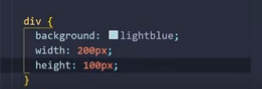

O CSS ou Cascading Style sheets ou folha de estilo em cascata, é utilizado para adicionar estilos em uma página da web, ele determina como os elementos e o layout da página devem ser exibidos no navegador.
Ele foi criado em 1994 pelo Hako Wium Lie com o objetivo de facilitar a p rogramação dos sites. O CSS muitas vezes é considerado uma linguagem de marcação ou até mesmo uma linguagem de programaçõa, mas ele não é nenhma das duas. O CSS é considerado uma linguagem de estilo, com ele podemos criar muitas coisas como os layouts, animações, páginas web, contadores e muito mais, para fazer tudo isso ele deve possuir porpriedades e seus valores. A propriedade são a caracteristica de um elemento do HTML, como a largura, altura e cor, etc, já os valores é a definição do resultado da propriedade e como ele deve ser exibido no navegador.
Existe três formas de declarar o CSS, são elas: CSS Inline, CSS interno e CSS externo.
O processo de depuração é mais conhecido como prod=cesso debug, pois ele é uma forma de identificar problemas no código-font de uma aplicação e entender o motivo desse comportamento. os navegadores possuem uma ferramenta que é utilizada para os desenvolvedores, que permite examinar os sites , requisições para recursos externos, entre outros, essa ferramenta é chamada de DEV TOOLS, para acessar e ferramenta basta fazer estes comandos:
Os seletores definem em qual elementos devem aplicar as propriedade CSS;
As regras CSS podem ser aplicadas para vários seletores diferentes, por causa disso podemos separar os seletores opr uma vírgula, para evitar ficar copiando ou colando os mesmos códigos;
Específica o tipo de relação entre dois seletores, como entre duas classes ou classe e ID. Para utilizar um combinador sua estrutura deve ser assim: [seletor] [combiandor] [seletor].
Logo após inserimos o valor das propriedades precisamos passar a unidade de medida, para isso podemos usar, cm, px, % e pontos. Temos algumas palavras chaves que podemos utilizar, a palavra auto vai determinar uma altura ou largura automatica se utilizada nessas propriedades, como em outras propriedades. A palavra Initial aplica a propriedade que tem como padrão, que seria o valor inicial.
Prorpiedade altura(height);
Prorpiedade largura(width);
Outra palavra reservada do CSS é o inherit, que define o valor da nossa propriedade de acordo de acordo com o do seu elemento pai. Temos outras duas prorpiedades que são usadas no CSS que são o max-widht e min-widht, max-height e min-height, que definem a largura e altura máxima e minina.

Propriedade que cria um espaçamento ao redor dos elementos que é aplicado por fora, podemos definir as margens com propriedades individuais para cada do elemento ou utilizar uma propriedade apenas, na margem podemos utilizar formas de expressar o valor em cm, px, % entre outros. Quando utilizamos apenas a palvra margin e atribuimos um valor apenas, automáticamente esse valor será adicionado aos lados do elemento, se adicionarmos dois valores, o primeiro valor será adicionado ao topo e abaixo do elemento o segundo valor será adicionado aos lados: esquerda e direita.
No caso de três valores adicionados o primeiro valor será aplicado no topo do elemento, o segundo valor será para as laterais e o último valor será abaixo do elemento. Quando temos quatro valores cada um deles é adicionado ao um lado do elemento, a forma mais simles de decorar a ordem dos valores é lembrar de seguir o sentido horário. Através da margem tam,bém podemos aplicar valores negativos. /p>
Responsavél por aplicar espaçamento interno nos elementos, ele funciona igual a margem mas de forma diferente, a ordem de aplicação e valores negativos para quantidades de valores diferentes também é igual.
A propriedade box-sizing aceita dois valores que são: content-box, que soma o valor do padding e a largura do elemento que definimos, o segundo valor é o border-box redimenciona o conteúdo do nosso elemento, somando as bordas desse elemento.